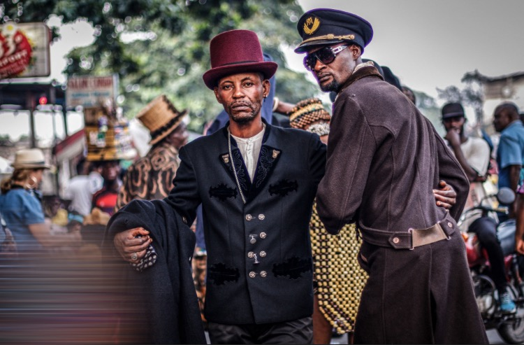
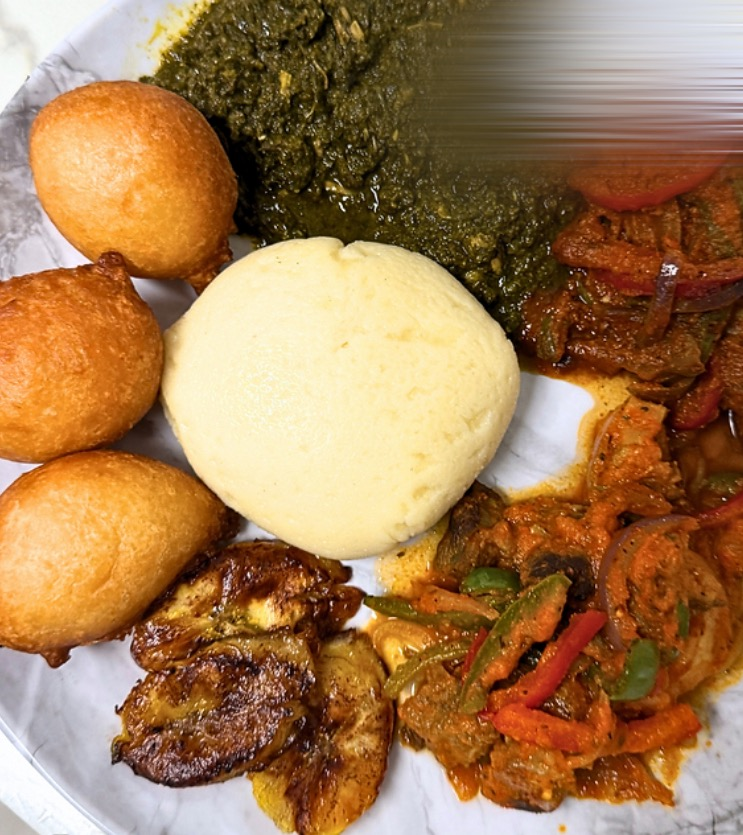

🎵 RDC VIBES

À Kinshasa, la capitale de la RDC, s'habiller est bien plus qu'une habitude, c'est un véritable sport national ! Les sapeurs sont des hommes et des femmes passionnés qui adorent porter des vêtements de luxe avec des mélanges de couleurs incroyables. Pour eux, la Sape n'est pas juste une question d'argent, c'est surtout une question de respect des autres, de politesse et de grande fierté culturelle. Ils transforment chaque coin de rue en un magnifique défilé de mode, apportant de la joie et de l'élégance à toute la ville.

La gastronomie de la République Démocratique du Congo est célèbre pour être l'une des plus savoureuses et variées d'Afrique Centrale. Le plat incontournable est le Pondu, une délicieuse préparation à base de feuilles de manioc pilées. On retrouve aussi le poulet à la Moambe, cuisiné avec une sauce onctueuse à la noix de palme. Ces plats sont traditionnellement servis avec du riz chaud ou du Fufu, une boule de pâte blanche consistante que l'on déguste avec les mains. C'est une cuisine très généreuse qui rassemble toujours les familles et les amis dans une ambiance festive et chaleureuse.